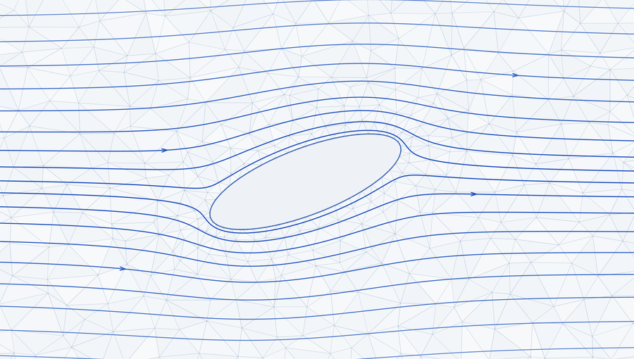

Representing the field
A fine mesh may place many points along one boundary. How should a model weight their contributions when it compresses velocity, pressure or water depth into a small set of tokens?
Doctoral research proposal
How much simulation data and training time does a fast surrogate need to predict flow reliably on a geometry it has never seen?
Read the public proposal PDF
Research programme
A fine mesh may place many points along one boundary. How should a model weight their contributions when it compresses velocity, pressure or water depth into a small set of tokens?
The same rain can produce different flooding on two terrains. I will compare giving a model all inputs together with letting a separate geometry representation guide the flow prediction.
I will compare training from scratch with adapting a pretrained model. At the same forecast accuracy, which needs fewer new simulations and less total computation?
Proposed KISS benchmark
Urban flood forecasts depend on terrain, rainfall, infiltration and exchange between surface water and sewers. The planned benchmark will reserve entire real and synthetic catchments for testing.